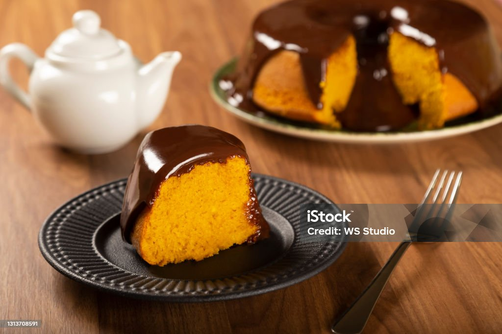

Bolos Maravilhosos
- Bolo de Cenoura de Liquidificador: Bata cenouras, óleo, açúcar, ovos, leite, farinha e fermento, depois asse por 35 minutos. Cubra com calda de brigadeiro feita com leite condensado e cacau em pó.
- Bolo de Chocolate com Café: Misture ovos, açúcar, óleo, café coado quente, chocolate em pó e farinha para uma massa bem fofinha e úmida.
- Bolo Simples da Vovó: Bata ovos com manteiga e açúcar, adicione leite, amido de milho, farinha de trigo e fermento para uma textura leve.

Itens para preparo
- Tigela ou batedeira: Para misturar os ingredientes.
- Fue ou colher grande: Para incorporar a massa.
- Forma: Untada com manteiga e farinha.
- Forno: Pré-aquecido para assar de forma uniforme.